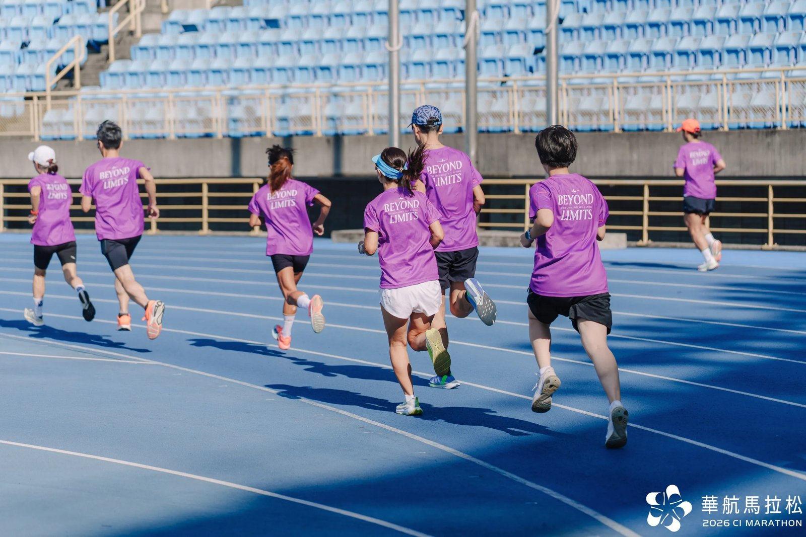

華航馬品牌訓練營，學員寫下的話

二〇二六華航馬品牌訓練營結營了。班主任請大家填了結營回饋問卷，今天讀完後，有好幾則讓我很感動。
下面摘出幾句學員寫的話，好多人都說出了我在訓練營中想做到的事，以及想傳達的價值。首先是這位學員的這句話，講得極好：
❝ 強大不該只有意志力，科學與技術，才能帶著無傷走得更遠跑得更久，玩得更快樂～ ❞
用一句話形容這次訓練營
回饋單的第一個問題是「若要用一個關鍵詞或一句話形容這次訓練營，你會怎麼說？」→ 大家說：
▹ 從跑步出發，跑出實力、跑出友誼、跑出更好的自己。
▹ 開啟跑步的另一扇窗
▹ 跑步真的好有意思
▹ 相見恨晚
▹ 人生一定要來一次
▹ 讓我遇見更好的自己🙌🏻
▹ 非常有溫度的專業！
▹ 先慢後快，微笑完賽
▹ 手眼口鼻心都練到的訓練
▹ 從根本改變跑步的姿勢與發力方式
值得保留的安排
另一個問題是「這次訓練營中，你覺得哪些課程內容或活動安排特別好，值得未來繼續保留？」→ 大家說：
▹ 先修課讓學員有期待練功的躍躍欲試的感覺，團課也是，讓同學更認識彼此與老師。
▹ 先修課是最特別的，且很多細節不是看影片就能做好做對。
▹ 先修課，才能理解教練的想法及如何執行課表。
▹ 力量與技術訓練示範演練：往往我們自己看影片可能都會做錯誤的動作，有現場教練提點，能減少做錯導致受傷的風險。
▹ 團練：因為能接受教練最直接的指導，而且與同學一起互動與做動作練習，感覺特別會有一個 team 的氛圍👏
▹ 活動度檢測：可以認識自己身體的密碼數字；5K 測驗：可以檢視受訓的成果。
▹ 賽前分享：說實在，我覺得這超棒的，有時跑步不只是身體負荷，我覺得心理層面的準備反而是這個分享會帶來最重要的收穫。
▹ 都需要（我覺得環環相扣）
大家說得真好。不論是先修課、力量、技術（姿勢跑法）、活動度與熱身，都是我多年來在訓練營裡必有的元素，只是隨著經驗累積，不斷改善流程與內容，讓它們之間的連結愈來愈順。很高興學員們能感受到這些安排的用心與價值。
推薦給朋友
還有一個問題是「如果要推薦這個訓練營給朋友，你會怎麼介紹？」→ 大家說：
▹ 讓你重新認識與慢慢重新愛上跑步的一堂課。
▹ 不論是新手老手，都建議來重新認識跑步。
▹ 這是一個沒有壓力卻收穫滿滿，技術、知識都提升的訓練營。
▹ 不需要每週集合團練，每個人都可以依照自己時間去訓練。有自己專屬的課表，還有搭配 RQ APP，可以看到自己的進步。
▹ 跟著訓練營課表走，輕鬆無痛的進步。
▹ 我會推薦給已經跑了一陣子，但缺乏系統，想要讓自己變更好的朋友。
▹ 可以從根本改善跑步容易發生的一些運動傷害，並且更容易覺察跑步時身體給的反饋。
▹ 希望大家都學會跟身體相處的訓練模式～
▹ 跑步不再孤單，而是與一群夥伴一起追逐目標、共享汗水與成就。
▹ 有最專業的教練團隊跟最熱心的班主任，讓人很安心。
讀這些回饋，我最開心的是好幾位學員寫到「重新認識跑步」、「更容易覺察身體給的反饋」。訓練營只有十週，我期待這段期間我和 KFCS 的教練們教給大家的觀念、感覺和動作，能幫助這群跑者跑得更久更健康。
回饋單中，也有不少學員希望多一些實體團練和交流的機會，這些建議我都看到了，謝謝大家。
最後，想好好謝謝今年每一位學員的投入，也謝謝華航、班主任和 Jason 的支持，以及和我一起帶訓練營的 KFCS 教練們（志鵬、鼎軒、君帆、冠汝、家華、百陞、靖祺），謝謝你們，希望你們也在此次訓練營中有所收獲，之後我們有緣在跑道上再見。